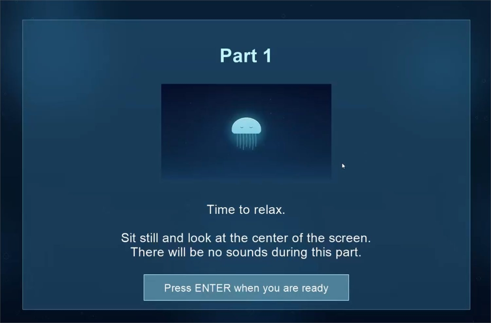

Research
Neural Entrainment
Adapting an adult neural-entrainment paradigm for children, without letting “child-friendly” visual design break the timing the experiment depends on.
- EEG
- Statistical Learning
- Neural Entrainment
- PsychoPy
- Experimental Design
- Visual Stimuli
Research question
The paradigm I am adapting comes from work by Batterink, Mulgrew and Gibbings. The adult study asks whether neural entrainment is only a signature that shows up after learning has happened, or whether rhythmic alignment can actively support statistical learning itself.
Adults listened to continuous speech streams containing repeating word structure while watching visual stimulation that was rhythmically congruent, incongruent, or static. The original work reported stronger entrainment at the relevant rhythm under congruent stimulation, and greater sensitivity to the hidden statistical structure on later implicit-learning measures.
My question is narrower and practical: what has to change before a child can sit through this, and what is not allowed to change at all?
Design problemThe visual stimulus has to become calmer and easier to watch for several minutes. The temporal structure, refresh consistency and EEG synchronization all have to stay exactly as they were.
Engagement cannot break timing
The tempting version of this brief is “make the visuals cuter.” That version would quietly destroy the experiment. Entrainment studies measure alignment to a specific rhythm, so any new visual element that repeats, pulses, or moves on its own schedule becomes a second rhythm competing with the one being measured.
So I treat child-friendliness as an experimental-design constraint rather than an art task. The first thing I did was break down the existing PsychoPy flow and separate it into two lists: what is free to change, and what is load-bearing.
- Free to change
- Subject matter, palette, character design, level of detail, and the overall emotional register of the stimulus.
- Fixed
- Cycle structure and loop length, frame-accurate refresh consistency, and the LSL marker and EEG event synchronization the analysis depends on.
- Disallowed
- Sudden motion, reward beats, narrative events, or any secondary repetition that could introduce an unintended rhythmic cue or shift attention mid-block.
Stimulus directions and tradeoffs
I explored several low-arousal directions: levitating capsules, small light-based creatures, a simplified robot, and a glowing jellyfish. The criteria were the same each time. It has to hold a child’s gaze without becoming a story event, it has to loop cleanly, and it has to look the same on every cycle.
The jellyfish won for reasons that are mostly structural. Its silhouette reads instantly at low contrast, its motion is naturally continuous rather than eventful, and a soft ambient glow can carry the cycle without a hard visual accent that a child would start anticipating.
The animation is designed around fixed timing rather than fitted to it afterwards. For a 5.4-second loop at 60 fps and an approximately 1.11 Hz structure, the movement, the shadow, the reflection, and every other repeated visual change have to stay locked to that cycle so none of them introduces a competing beat.

The Part 1 instruction screen. The same calm register has to carry through the instructions, not only the stimulus, or the child arrives at the block already activated.
Implementation and synchronization
I am integrating and adjusting the stimulus presentation in PsychoPy while keeping LSL markers and EEG event synchronization in scope from the start, rather than treating them as something to reconnect afterwards.
The open question I am still working through is how to deliver the animation. Pre-rendered video gives tighter visual consistency between participants, but it still has to be checked for playback behaviour and dropped frames on the testing machine. Script-controlled animation is more flexible and easier to adjust late, but it makes frame-level timing harder to guarantee. Neither is free, and the decision depends on what the pilot shows about playback stability.
Current status
Ongoing adaptation and pilot preparation. The stimulus direction is selected and the presentation is being integrated; child data collection has not happened yet.
Research basis: Batterink, Mulgrew & Gibbings, Journal of Cognitive Neuroscience; QLAB research on language learning across development, statistical learning, and neurodevelopmental populations.